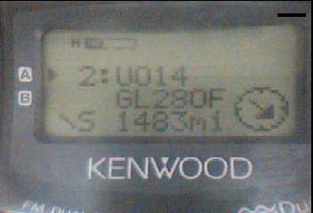
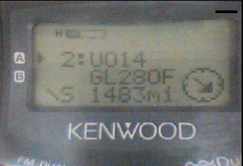
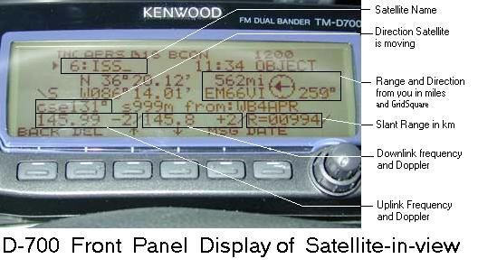
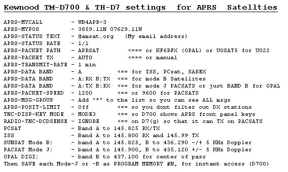

Operating Satellites Mobile while in View

Bob Bruninga, WB4APR
APRSdata: . APRSdata is just one of the applications that puts out local relevant information for use in real-time for mobile operators (see localinfo). . The purpose of APRSdata.exe is to serve a regional area by putting out APRS satellite objects once a minute whenever the satellites are in view in an area. . This is local data serving local users. The satellite objects are optimally configured to present all of the needed information on the front panel display of the D7 or D700 mobile radios or a HAMhud. All of the following information on the Mobile Radio's screen...

 

The photos above show you what this data looks like on the D7 display. . First is the DX-SPOT list showing that there are three satellites UO22, AO27 and UO14 coming up in the next 80 minutes and when. . Next is the Frequency and Doppler display of the uplink and downlink frequencies for the SO-35 satellite. . The third photo is the direction and distance display to UO-14. Since most of these satellites are up about 500km or more, then when it is 800km away it is up about 45 degrees. When it is about 2000km away, it is probably near the horizon. . This information is Just perfect for aiming your handheld antenna. For more details see APRS Satellite Resources. . The photo below shows how all of this data is presented on the D700 display:

This is everything you need while mobile to operate that satellite, and you dont have to do a think to get all of this information. It pops up on your APRS Radio display when the satellite comes into view. . If it is an APRS satellie and you tune to it, then you will begin to see APRS satellite contacts also show up on your radio!
MOBILE SATELLITE OPERATIONS: . There are dozens of Amateur Radio Satellites up there, and most can be worked from the Mobile. . But the problem is knowing when they come into view. Low Earth Orbiting Satellites (LEO's) are usually in view for only 5 to 10 minutes for the mobile, but they are there at least 6 times a day for everyone. That is dozens of operating passes per day. For full background on the APRS satellites see the ASTARS page. You can see the activity on the APRS satelites on these pages: ARISS, PCsat, ANDE and RAFT. . As an Example mobile Satellite set up, see W4HFZ's station below:
APRS MESSAGES: Don't forget that while the satellite is in view, if it is an APRS satellite, then any packets you get through the satelite are received by IGates and fed into the APRS-IS like any other APRS packet. This way, no matter where you are on earth, at least a few times a day, you have the opportunity to get your position, status and even messages out. . Here is a photo of an EMAIL message received on the TMD700 radio. (The maximum length is 64 bytes).
{kind=link}
APRS EMAIL: Simillarly, any APRS operator can initiate an EMAIL message from his HT or mobile radio via the satellites. . Here is an Email I transmitted from my D700 mobile enroute to work one day. Notice that the SINGLE packet entered into the D700 was simply:
Yet, here is how it was received by my Email system after being SAT-Gated to APRServe and from there, picked up by the EMAIL Engine at WU2Z's and shipped out as regular Email:

OPERATIONS SCENARIO: To develop a viable satellite communications system that can communicate between mobiles and also to/from the worldwide APRServe system within these limitations, the following operating scenario is what we envision when fully operational:
The screen shot below gives a good idea what an APRS satellite pass looks like on APRS:

If you already have APRSdos, then all you need is the APRSdata executable and its support files. . You can download that ADAT-EXE.ZIP file. If you dont already have APRSdos installed, then also download APRS848 too and install it first with PKUNZIP -d or WinZIP.
TM-D700 and TH-D7(G) SETTINGS: Here is a list of my minimum setups for the new Kenwood TM-D700 data mobile and TH-D7(G)data handheld for front-panel-to-Satellite mobile communications via a digipeating PACSAT in Mode-J or Mode-B:

TRANSMITTING: Notice, the new D7(G) has the DCD SENSE command so that the TNC will operate full duplex in APRS mode. BUT, In APRS mode, the D700 does not have this ability to set the internal TNC to FULLDUPLEX. THus, while your D700 mobile receive BAND is receiveing data the radio will not transmit. Understanding this problem will be your key to success. If the Satellite has periodic quiet times on the downlink (SUNSAT) then operate normally. It will get a chance to key up. But if the downlink is 100% in use as is normal for UO-22 and all the other PACSATS, then here are some ways to force a transmit:
ANTENNAS: Because of the short coax run in a car, and no need for a PREAMP, a simple 19+" 2m WHIP antenna in the center of your car roof is an ideal mobile OMNI antenna for both VHF and UHF satellites. On UHF, the antenna is a 3/4 wavelength whip with an 8 dBi lobe at high elevations which is ideal for the satellite near the center of the pass (yellow plot below). My D700 will capture packets when the PACSATS are above 25 to 30 degrees for a few minutes, (lower for UO14 and SUNSAT) But to gain the full downlink, a handheld 4 element or so UHF downlink antenna rotated in AZ, EL and polarity is required. Much experimentation in this area is needed. Here is a plot of the EZ-NEC produced gains of three whip antennas including the path loss due to range. My 3/4 wavelength antenna picks up the sats at about 20 deg. Better than shown here.

To validate the data for the 3/4 wave vertical, I built a 1575 MHz scale model of the antenna AND car roof and connected it to a GPS receiver and my SIGPLOT.BAS program. Letting it run all night, gives an all-sky GAIN PLOT using the satellite signal strengths as the RF source. Thus, over time, you get known RF from all angles and all azimuths and the SIGPLOT program produces a real-world plot of actual antenna pattern as shown below. I did it twice, the Green is the 3/4 and Red is the 1/4 wave. Notice the high angle gain of the 3/4 at all angles above about 25 deg. Although the 1/4 is better down to about 10 degrees, the 6 dB greater path loss due to the greater distance to the satellite (and trees and buildings) cancels any advantage here for the weak PACSAT downlinks. The car roof I modeled was the size of a compact sedan.

TUNING MODE-J: Doppler tuning the UHF downlink is trivial to do by ear. Although 9600 baud data sounds just like open-squelch noise, it does have a "quality" to it that can easily be heard by ear when the receiver is not centered in the data bandwidth. All passes begin at +10 KHz and move down in 5 KHz increments down to -10 KHz. It only takes a fraction of a second to test QSY to hear if it is time to tune or not. Eventually you can hear when it is time... For omni antennas where you wont hear the satellite on the distant horizon, then start at +5 and move twice to -5 during the brief pass. SUNSAT and PCsat had a wide UHF uplink receiver and so only -/+ 5 KHz tuning was required.
TUNING MODE-B: On mode B you must compensate for UPLINK Doppler and it is not easy to do since you are doing it in the blind. But remeber it is OPPOSITE. Start off DOWN 10 or 5 Khz at the start. Tune Up 5 KHz as the pass progresses. Mode B satellites (SUNSAT and PCSAT) should be designed with WIDE receivers so that only 2 steps are needed. +5 and -5 KHz. (The center is so brief as to not be worth tuning).
EFFECTIVENESS: The APRStk screen shot below shows the ANALYZE command which plots the packet count over time (in red) along with the Elevation Angle (in green). This is useful to compare the relative performance of your station. Notice how KO23 has just completed a pass and the packets began being received on my 20" 3/4 wave Omni at about 30 degrees and then it was received all the way down to about 20 degrees. The 5 evenly spaced spikes are local TNC reset data that occurs every time the THD7 is commanded to QSY down 5 Khz. Two other spikes are spurious re-tunes and the big one, I caused by QSYing the radio to 144.39 for a few seconds before I realized I wanted to save this plot. These peaks are not packets from the satellite. The TMD700 does not generate this extra data, since it does not reset the TNC everytime you send a QSY command.

COME JOIN US LIVE ON THE BIRDS!
DISCLAIMER: This ASTARS concept has not been considered, endorsed, or approved for operation via any existing satellite other than AO16, LO19, IO26, SO35, OPAL, SAREX, PCsat, Sapphire and ARISS. It is posted here to encourage experimentation for for consideration for future applications.
You are visitor number:
Since 24 Sept 2001. (about 500/month).
Return to the APRS HOMEPAGE
The Naval Academy is a registered user of APRS and WinAPRS. The purpose of this web page is to show several applications currently in use at this site and should not be considered as an advertisement or an endorsement of any commercial product.